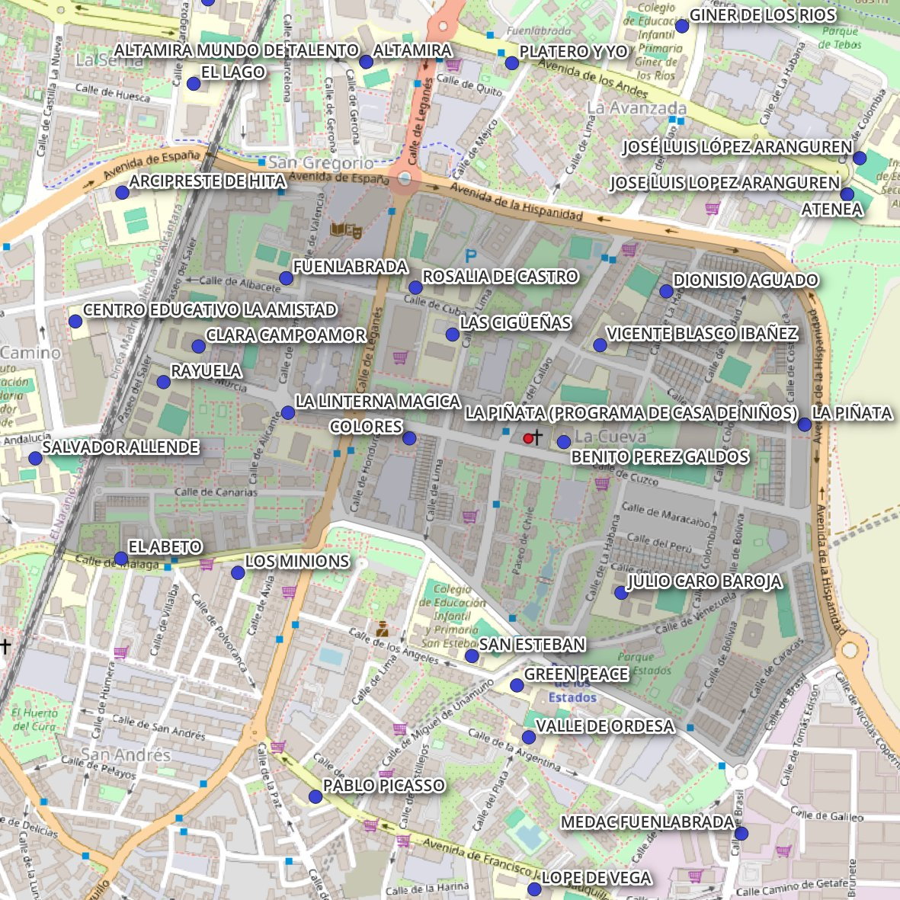

Puntos de interés en el territorio parroquial
Parroquia San Juan Bautista (Fuenlabrada) · Arciprestazgo de Fuenlabrada
Entidades religiosas no católicas
No hay ninguna entidad religiosa no católica en el territorio de esta parroquia.
Centros educativos

13 centros educativos en el territorio de la parroquia (público: 10, privado: 2, privado concertado: 1).
| Centro | Tipo | Titularidad | Domicilio | Web |
|---|---|---|---|---|
| BENITO PEREZ GALDOS | Colegio de educación infantil y primaria | Público | Calle Cuzco, 17, 28945 Fuenlabrada | Página web |
| CLARA CAMPOAMOR | Colegio de educación infantil y primaria | Público | Calle de Murcia, 14, 28945 Fuenlabrada | Página web |
| DIONISIO AGUADO | Escuela municipal de música | Público | Calle de la Habana, 33, 28945 Fuenlabrada | Página web |
| EL ABETO | Escuela infantil privada | Privado | Calle de Málaga, 30, 28945 Fuenlabrada | |
| FLIMBORT FORMACIÓN PROFESIONAL | Centro privado de formación profesional específica | Privado | Calle de Valencia, 15, 28945 Fuenlabrada | |
| FUENLABRADA | Centro privado de educación infantil, primaria y secundaria | Privado concertado | Calle de Valencia, 15, 28945 Fuenlabrada | Página web |
| JULIO CARO BAROJA | Instituto de educación secundaria | Público | Calle de la Habana, 2, 28945 Fuenlabrada | Página web |
| LA LINTERNA MAGICA | Escuela infantil | Público | Calle de Alicante, s/n, 28945 Fuenlabrada | Página web |
| LA PIÑATA | Escuela infantil | Público | Calle Costa Rica, 26, 28945 Fuenlabrada | Página web |
| LAS CIGÜEÑAS | Escuela infantil | Público | Calle de Lima, 39, 28945 Fuenlabrada | Página web |
| RAYUELA | Colegio de educación infantil y primaria | Público | Calle de Murcia, 15, 28945 Fuenlabrada | Página web |
| ROSALIA DE CASTRO | Colegio de educación infantil y primaria | Público | Calle Cuba, 1, 28945 Fuenlabrada | Página web |
| VICENTE BLASCO IBAÑEZ | Colegio de educación infantil y primaria | Público | Calle Cuba, 15, 28945 Fuenlabrada | Página web |
Fuente: registro de centros educativos de la Comunidad de Madrid. Solo se recogen los centros de alta.